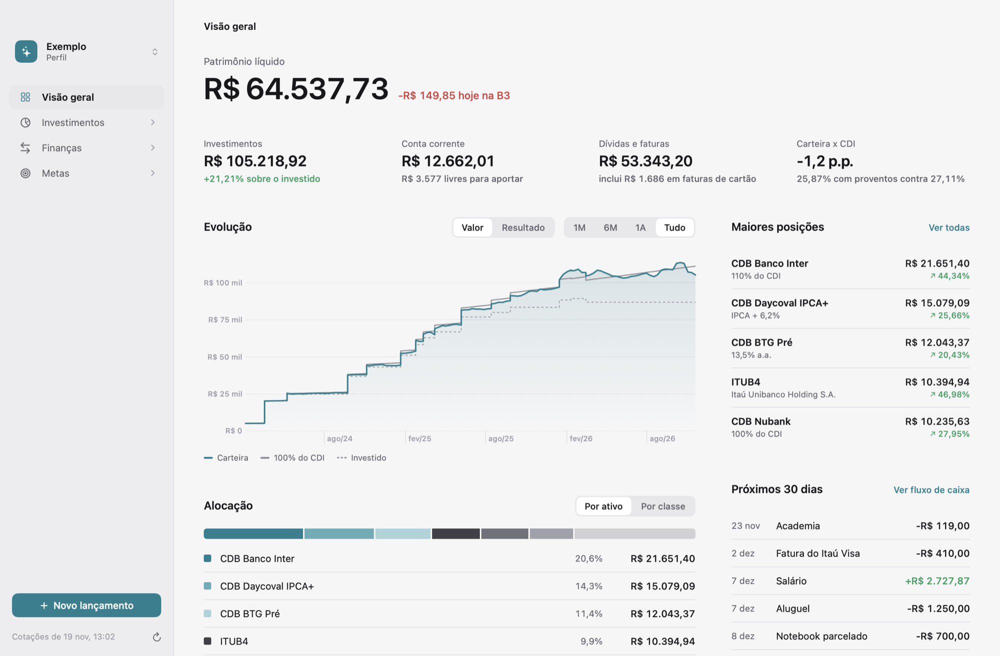
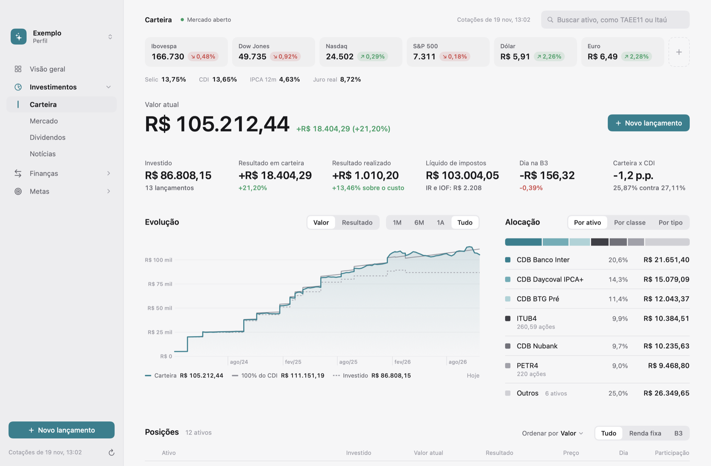
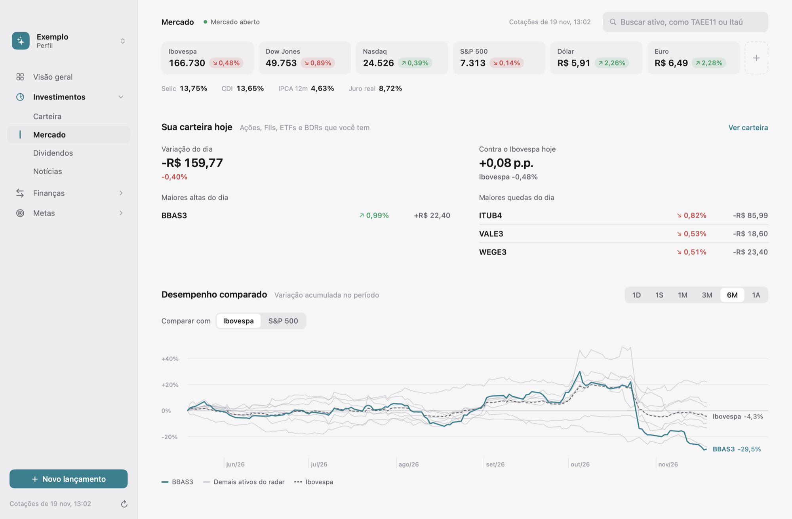
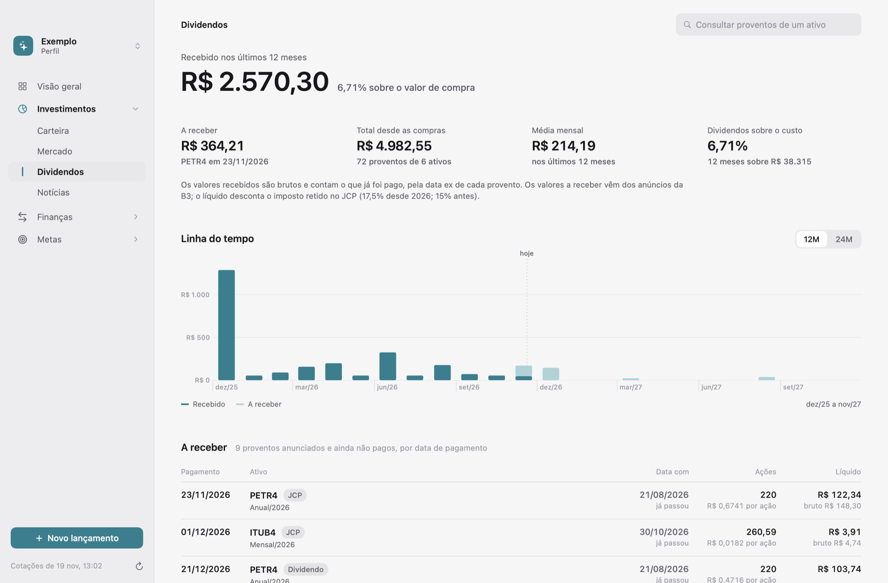
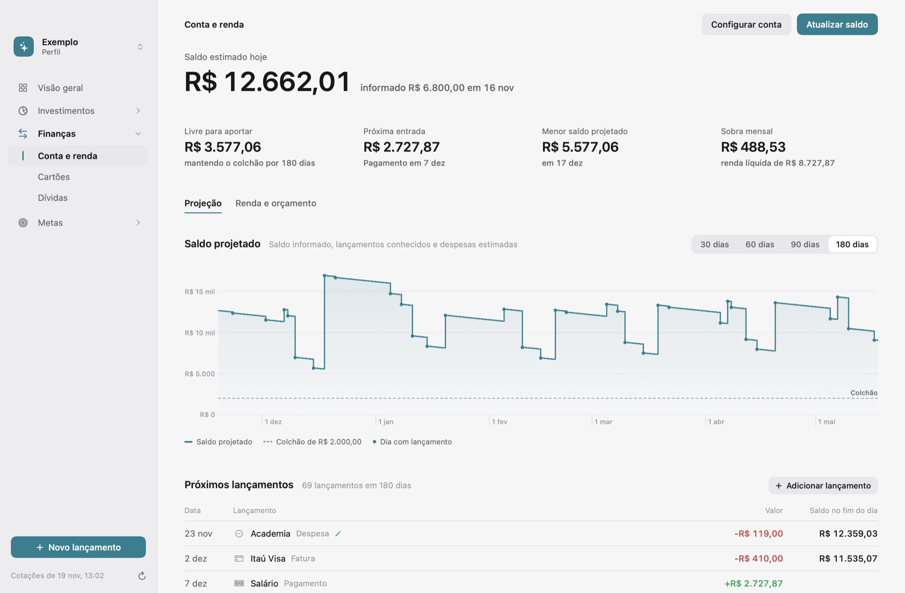
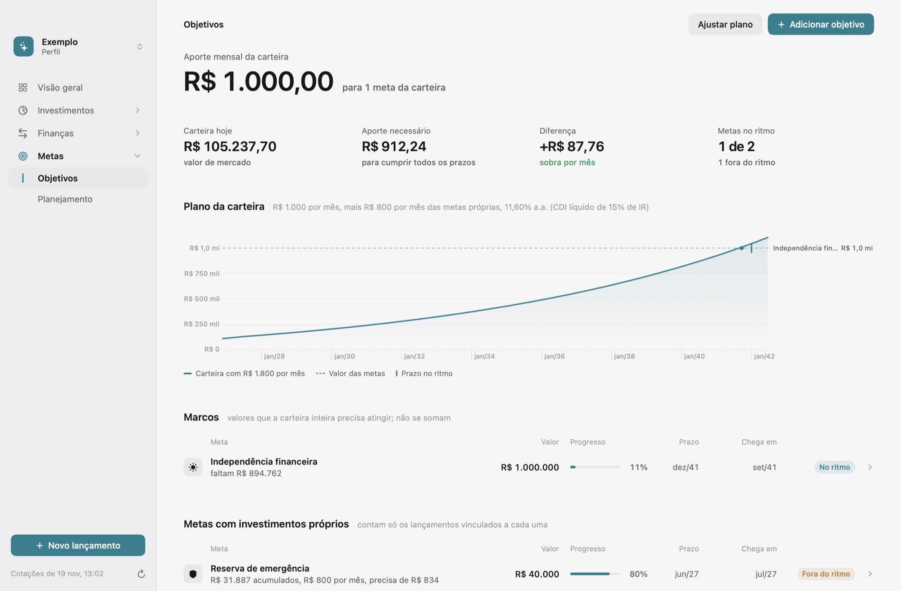
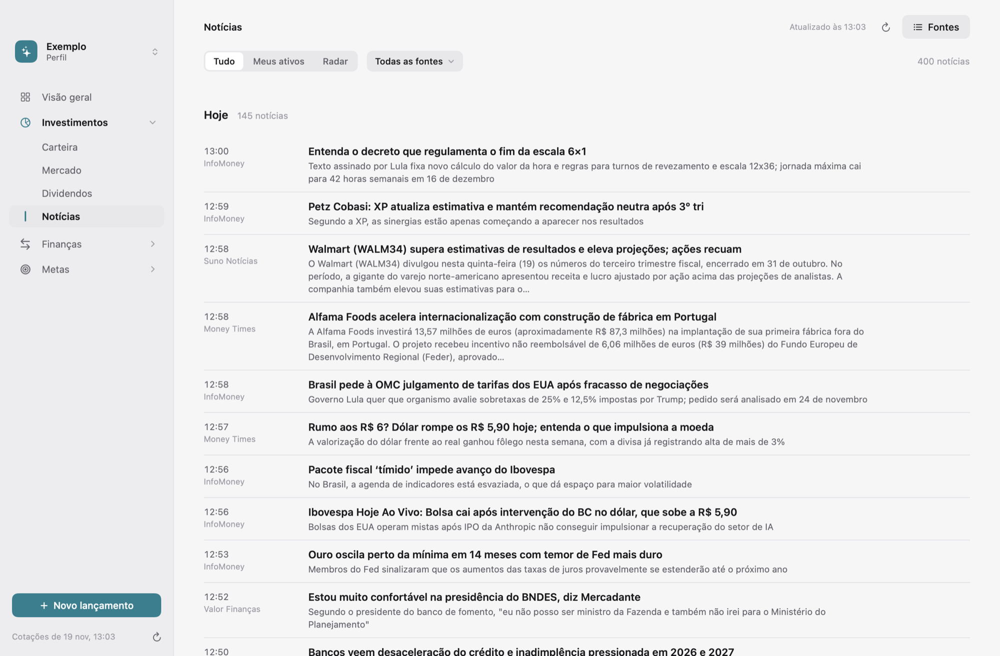

Investimentos, contas e metas
Seu dinheiro inteiro, numa tela só.
O Lastro acompanha CDBs, ações, FIIs e ETFs da B3, proventos, conta, cartões, dívidas e metas. As contas partem do que você comprou e de quanto pagou, e tudo fica guardado só no seu computador.
Baixar o Lastro
Carteira
Quanto vale, quanto rendeu e quanto sobra depois do imposto.
Você lança o ativo, a data e o valor. O Lastro busca as cotações e faz o resto da conta.
- Renda fixa por CDI, IPCA ou prefixada, com IR regressivo e IOF.
- Ações, FIIs, ETFs e BDRs por quantidade e preço pago, com desdobramentos.
- Carteira contra o CDI, no mesmo período e com os mesmos aportes.
- Venda e resgate pelo preço médio, com o resultado realizado guardado no histórico.

Mercado
O pregão de hoje ao lado da sua posição.
Índices e moedas no topo, na ordem que você escolher, e um radar com os seus ativos e os que você só acompanha.
- Minha posição: variação do dia em reais e contra o Ibovespa.
- Radar: gráfico do dia, IFR, média de 200 dias e faixa de 52 semanas.
- Leituras, não recomendações: a decisão é sempre sua.

Proventos
O que já caiu na conta e o que foi anunciado.
Dividendos e JCP numa linha do tempo só, calculados pela quantidade que você tinha em cada data.
- Recebidos desde a compra, com rendimento sobre o custo.
- A receber: anúncios da B3, com data de pagamento e valor líquido.

Conta e renda
O saldo dos próximos meses, antes de acontecer.
Salário com adiantamento, parcelas, faturas e aportes entram numa projeção dia a dia da conta corrente.
- Despesas mensais e avulsas: aluguel e internet com o dia certo; 13º, IPVA e viagens na data.
- Datas de verdade: dias úteis e feriados nacionais.
- Cartões: faturas abertas e fechadas saem no vencimento.
- Livre para aportar: quanto sobra mantendo o seu colchão.

Metas e planejamento
Um aporte por mês, vários marcos no caminho.
Cada meta é um valor que a carteira precisa atingir. O Lastro mostra quando ela chega lá e quanto falta aportar para cumprir o prazo.
- Dívidas contra rendimento: quanto custa cada contrato e quanto rende investir.
- Simulador de quitação para empréstimos e financiamentos.

Notícias
As notícias do que você tem, sem o resto.
Economia e mercado por RSS, de fontes brasileiras já cadastradas. Um filtro mostra só o que cita os ativos da sua carteira ou do seu radar.
- Fontes à sua escolha: ligue, desligue ou adicione um feed.
- Título, resumo e link: a leitura é no site de quem publicou.

Seus números não saem do seu computador.
O Lastro não tem cadastro, servidor nem coleta de uso. Ele só vai à internet para buscar cotações, índices e notícias públicas.
Tudo local
Lançamentos, saldos, dívidas e metas ficam num arquivo local. Dá para ver onde ele está e copiar quando quiser.
Fontes públicas
CDI, Selic, IPCA e dólar vêm do Banco Central. Cotações vêm do Yahoo Finance e proventos anunciados, da B3.
Atualização conferida
O app avisa quando há versão nova e instala com um clique. Cada atualização é conferida por assinatura digital, e antes de abrir a versão nova o Lastro guarda uma cópia dos seus dados.
Instalar leva um minuto.
- BaixeO instalador da versão mais recente é um arquivo .dmg.
- ArrasteAbra o arquivo e arraste o Lastro para a pasta Aplicativos.
- AbraAbra o Lastro pela pasta Aplicativos e crie o seu perfil.
Na primeira abertura, o macOS pode bloquear o app porque ele ainda não é notarizado pela Apple. Feche o aviso, vá em Ajustes do Sistema > Privacidade e Segurança e clique em "Abrir Mesmo Assim" ao lado do Lastro. Só é preciso fazer isso uma vez.
Novidades
As notas de cada versão estão em Releases.